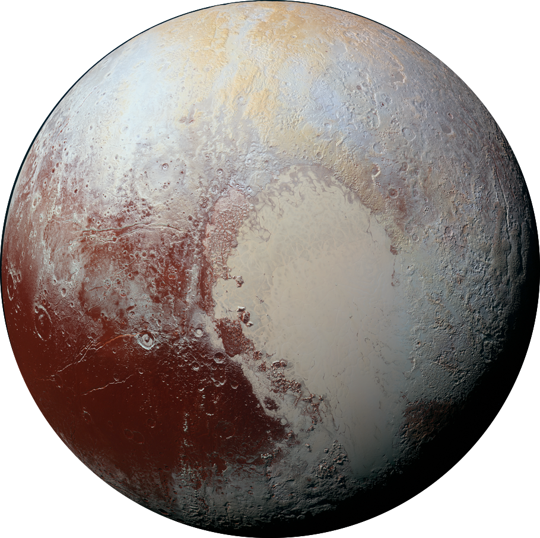

Pluto
Facts
- When the pluton is far from the sun, the place is covered with ice, as the sun approaches, a subtle atmosphere is formed and the place is covered with black dust.
- There is a heart-shaped region on it.
- Its satellites is Charon, Nix, Hydra, Styx, Kerberos.
- Pluto is the god of death in Roman mythology and his satellite Charon is the ferryman that provides the transition between life and death in Greek mythology.
- It is the second largest dwarf planet.
- The average orbital speed is 4.67 km/h.
- The gravity is 0,62 m/s*s
- The heart-shaped area has been sterilized in order to protect the live development of the planet and the incoming visitors.
- Clyde Tombaugh's ashes are found in the pluton because he can't see the spacecraft being thrown into the pluton.
History
- Pluto was discovered by Clyde Tombaugh in 1930 as the ninth planet from the Sun.
- International Astronomical Union (IAU) to define the term "planet" formally in 2006, during their 26th General Assembly. That definition excluded Pluto and reclassified it as a dwarf planet.
- On April 26, 2024, George Terry set his foot on Pluto.
- On July 15, 2033, the first settlements began.
Highlights
- Cave Tourism: The caves formed by the ocean layer beneath the ice layer and meteorological events have a magnificent view.
- Ash Museum And Ash Cemetery: A visit to the cemetery with the ashes of Clyde Tombaugh and the graves with the ashes of the couples.
- Rocket Trip Around The Planet: The opportunity to see the moons better during the flight around the planet and a romantic meal on the heart shape.
- Ice Skating Lessons And Ice Skating Competition: Artistic ice skating training for couples during the trip and surprise prizes to be given at a competition at the end of the trip.
- Ice Sculptures: A huge area full of ice sculptures!
- Science: Science bases outside the sterile area.
Precaution
- Life becomes quite difficult due to adverse conditions that occur during the transition of the seasons. There are special shelters for these situations.
- We offer a special sprey-product for scientists doing field studies outside the sterile area for safety.
Products
Heat Sensitive Color Changing Cup